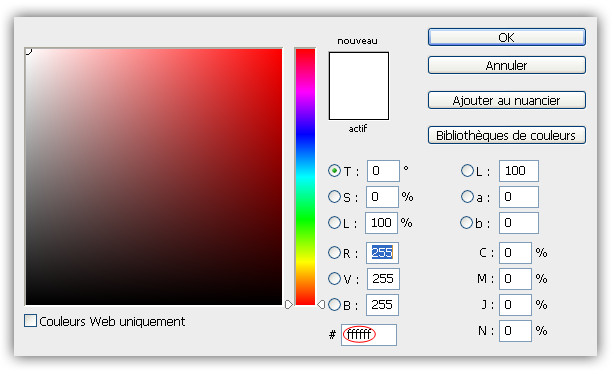
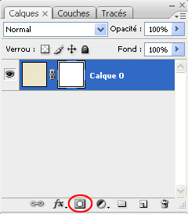
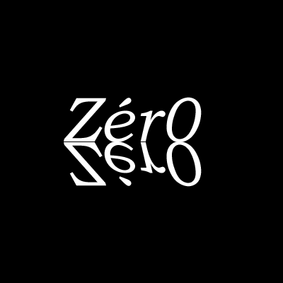
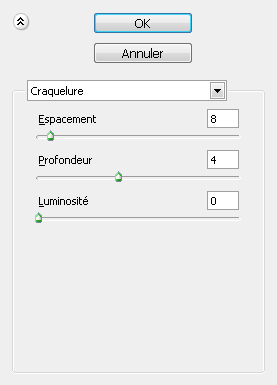
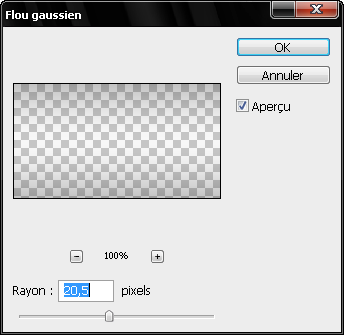

Vous avez sûrement déjà entendu parler des masques de fusion si vous utilisez photoshop.
Je suis débutant(e) sur Photoshop et je ne sais pas ce que c'est !
Pas de panique chers Zér0s, on commence tout à partir de zéro ;) ! C'est très simple, un masque de fusion est une sorte de calque qui s'ajoute à un calque choisi pour faire disparaître certaines parties de votre image. Cette technique est efficace et nous allons voir pourquoi !
Tout d'abord, bienvenue dans la première sous-partie de ce tutoriel (et oui il n'y a qu'une seule partie :p ). J'ai pris le soin de ne pas commencer à l'arrache en laissant perdus ceux qui ne savent pas ce qu'est un masque de fusion. C'est pourquoi je vais vous présenter un peu le sujet de ce tutoriel.
Qu'est-ce qu'un masque de fusion ?
Alors, j'ai déjà commencé à vous expliquer de quoi il s'agissait dans l'introduction (si toutefois vous l'avez lue ^^ ). Comme je disais, un masque de fusion est une sorte de masque qui vient s'ajouter à un calque pour effacer certaines parties de l'image.
Pourquoi se casser la tête à utiliser ton masque alors qu'il y a l'outil gomme pour ça ?!
Eh bien tout simplement parce qu'avec l'outil gomme, l'image est effacée définitivement. Les connaisseurs en la matière savent évidemment qu'on peut annuler "maladroitement" cette action via l'historique. Mais ce n'est pas pratique...
Attends une seconde... t'es en train de nous dire qu'on n'efface pas une image définitivement avec le masque de fusion ? Quelle est son utilité alors ?
Non, c'est exact ! C'est pour ça que le masque de fusion porte bien son nom. Quand vous faites disparaître une partie de votre image, l'information de l'effacement est contenu dans le "calque" du masque de fusion. Donc, lorsque que vous désactivez ou supprimez votre masque de fusion, toutes les actions effectuées avec ce même masque sont désactivées ou supprimées.
Nous allons maintenant voir comment fonctionnent les masques de fusion. Le système est assez simple. On sélectionne soit la couleur noire (#000000) si on veut on veut faire disparaître ou la couleur blanche (#ffffff) si on veut faire réapparaître une partie de l'image que l'on a fait disparaître.
Heu, je n'ai pas vraiment compris les chiffres et les lettres que tu as mis entre parenthèse o_O !
Nous allons justement voir dans la sous-partie suivante de ce tutoriel, à quoi elles correspondent. Pour le moment, nous allons juste voir comment entrer ces "codes" dans Photoshop.

Il vous suffit simplement d'écrire, par exemple, "ffffff" ou encore "000000" pour que la couleur choisie soit blanche ou noir.
Dans la précédente sous-partie, je vous ai expliqué qu'un masque de fusion fonctionnait comme ceci : Le noir pour faire disparaître et le blanc pour faire réapparaître. Pour tester tout ça, créez un nouveau document pas trop petit, pas trop grand (je vous laisse décider pour ça, vous être assez grand :p ). Nous allons voir comment activer l'option masque de fusion. Cliquez sur l'icône entourée en rouge ci-dessous :

Dès que vous cliquerez dessus, vous remarquerez qu'il y a un carré blanc avec à gauche une icône "trombone" (enfin, c'est comme ça que je l'appelle ^^ ). Ce carré blanc représente le masque de fusion. Ne touchez pas au "trombone" ! Il lie le calque et le masque de fusion.
Si vous faites un clique droit sur le carré blanc, vous pouvez supprimer le masque de fusion, l'appliquer ou le désactiver (temporairement ou non). Maintenant passons à la manœuvre :pirate: ! Prenez l'outil pinceau (opacité à 100%). Peignez en noir (#000000) une partie de votre image. Comme par magie, elle disparaît ! Repassez avec la couleur blanche (#ffffff). Là, ça fait réapparaître. Vous voyez donc l'avantage par rapport à la gomme, on n'efface pas définitivement.
Ok, c'est sympa ton truc, mais comment on fait si on ne veut pas effacer complètement ?
Il y a deux méthodes.
Il y a la méthode où on utilise l'opacité du pinceau.
Il y a aussi la méthode où on met du gris pour ne pas faire disparaître complètement.
Laquelle des deux est la meilleure ? Honnêtement, je pencherais plutôt vers la seconde méthode, qui n'est pas la plus facile. Pourquoi cette méthode ? Parce que si je veux travailler avec le pinceau sans utiliser le masque de fusion, je serais après contraint de remettre l'opacité du pinceau à 100 %.
Première méthode
Allez-y, testez ! Modifiez l'opacité pour faire disparaître ou réapparaître une partie de l'image. Peignez d'abord en noir puis en blanc ! Cette première méthode est facile à utiliser et utile pour ceux qui ne connaissent pas le code hexadécimal.
Seconde méthode
En parlant de code hexadécimal, il est nécessaire de l'apprendre pour comprendre la seconde méthode. Apprenez-le en lisant le cours de M@teo21. Rendez-vous dans la partie "La notation hexadécimale". Ne vous inquiétez pas, c'est rapide à lire ;) .
La seconde méthode consiste elle aussi à ajuster l'opacité, mais...
Hé oh ! Tu nous apprends un truc plus dur alors que c'est la même chose ? T'es sadique ou quoi ?
Mais laissez-moi finir ma phrase :colere2: ! Donc je disais que ma seconde méthode consistait à régler l'opacité mais pas en fonction du pinceau, en fonction du masque de fusion. C'est plus utile si on veut, plus tard, peindre sans le masque de fusion, comme je l'ai dit : on n'est pas obligé de remettre l'opacité à 100 %. Ma méthode se sert justement de la notation hexadécimale ! Comme je vous l'ai dit précédemment, on peut utiliser le gris pour ne pas complètement faire disparaître l'image. Mais un gris parfait ! Ce que j'appelle un gris parfait est un gris qui a exactement les mêmes tons de rouge, de vert et de bleu. Un gris incorrect est un gris qui n'a pas les mêmes tons de rouge, de vert et de bleu (en fait, on ne devrait même pas l'appeler gris ^^ ).
Explications : Gris parfait/incorrect
Comme vous le savez déjà, pour faire du gris parfait, il faut exactement les mêmes tons de RVB (rouge, vert, bleu). Mais il ne faut pas que les gris soient à pleine puissance (dans la notation RVB, 255 (le maximum) de ces trois couleurs donne du blanc).
Alors, si j'ai bien compris, il faut 50 % de noir et 50 % de blanc ?
Pas du tout, je n'ai jamais dit ça. 50 % de noir et 50 % de blanc font effectivement un gris parfait mais 75 % de noir et 25 % de blanc aussi :p . Je vous conseille d'aller lire la méthode RVB, dans le même cours que la notation hexadécimale. Si vous l'avez lue, vous allez comprendre que tant que les trois couleurs (Rouge Vert Bleu) ont la même valeur, cela fera un gris. Hormis quand il y a 0 et 255 de chaque (ça fait du noir et du blanc).
D'apparence, si on a l'œil d'un graphiste, on peut distinguer la dominance d'une couleur dans un gris dit "incorrect". Dans cet exemple, les trois couleurs ont presque la même teinte à quelques détails près.
Voici une liste des principaux vrais gris : #555555 #666666 #777777 #888888 #999999 #aaaaaa #bbbbbb #cccccc #dddddd #eeeeee
#555555
#666666
#777777
#888888
#999999
#aaaaaa
#bbbbbb
#cccccc
#dddddd
#eeeeee
Bien entendu, il y a des tas de gris entre chaque exemple. Par exemple, il y a #cecece entre #cccccc et #dddddd. Vous avez sans doute remarqué que j'ai commencé à partir de #555555 et non pas à partir de #000000. Cette dernière couleur n'est pas du gris mais du noir. #111111 #222222 #333333 #444444 Ces trois couleurs sont bien du gris, mais pour l'œil humain, elles sont très semblables au noir. Or, vous n'en aurez pas besoin en tant que gris pour effacer, ils auront plus l'usage d'un noir que d'un gris. Je n'ai pas listé le #ffffff car il s'agit du blanc !
#111111
#222222
#333333
#444444
Ouais, ouais tu nous intéresses avec tes trucs mais là tu nous fais un cours d'hexadécimal, c'est ça ta méthode ?
Bien évidemment... non :p . Alors passons à la pratique :diable: ! Prenez du gris #555555 (toujours en mode masque de fusion) et peignez votre image. Prenez ensuite du gris #cccccc et peignez.
Vous voyez que pour tout faire disparaître, du gris #555555 est moins efficace que du #000000, mais tiens quand même la route. Pareil avec #cccccc par rapport au #ffffff.
Voilà, je vous ai appris les méthodes de masques de fusion que je connaissais pour le pinceau ! En espérant que vous ayez appris des choses (même pour ceux qui connaissaient déjà un peu le masque de fusion).
Nous avons vu avec les pinceaux que le gris était en quelque sorte un mélange du rôle du noir et du blanc dans les masques de fusion. Pour les dégradés (noir vers blanc), c'est la même chose ! Plus le noir va se dégrader vers le blanc, moins il sera efficace pour effacer et vice-versa. Bien entendu, la méthode des dégradés est plus précise. Nous allons voir pourquoi.
A quoi peuvent servir les dégradés ? Je ne vois pas en quoi c'est plus précis pour effacer une partie d'une image o_O !
Eh bien d'une manière précise, si. En général quand on utilise un dégradé dans un masque de fusion, c'est pour effacer la moitié d'un calque. Vous me direz que c'est logique car on a une partie de noir et une partie de blanc à dégrader ;) . Eh bien, vous aurez raison ^^ . A quoi peuvent bien servir les dégradés ? Si on veut effacer petit à petit la moitié de notre image, on peut par exemple faire un reflet. Comme ceci :

On effectue en suite le dégradé du haut vers le bas (blanc vers noir puis en mode masque de fusion) :
Jusque là, rien de trop compliqué. Seulement, la mauvaise nouvelle de cette sous-partie est... qu'elle ne s'annonce pas du tout difficile :p . Oui vous avez bien lu, cette partie est donc facile et vous ne vous fracasserez donc pas la tête contre un rocher :-° !
Revenons à nos moutons et donc à notre principe noir/blanc et gris. Comme l'indique le titre de ce chapitre, on peut évidemment utiliser le masque de fusion avec les filtres.
Le Filtre "Nuages"
Vous connaissez sûrement le célèbre filtre "Nuages". Si certains ne connaissent pas du tout, il s'agit d'un filtre qui produit... des nuages. C'est aussi simple que ça ! Imaginez maintenant que votre nuage soit composé des couleurs noires, blanches et grises. Vous commencez à comprendre n'est-ce pas ? Il s'agit bien sûr de faire réapparaître l'image en fonction du noir et du blanc que feront apparaître le nuage. A la pratique moussaillons :pirate: ! Pour l'exemple des filtres, je vais prendre le logo de la bannière du site du zér0 avec en fond, un petit dégradé. Si vous souhaitez télécharger l'image rendez-vous ici. Prenez cette image ou une autre de votre choix (déverrouillez-là si elle est au format JPEG) et appliquez-lui un masque de fusion. Assurez-vous que vous que votre couleur de premier plan soit du noir et que celle d'arrière-plan soit du blanc. Ensuite, allez dans le menu "Filtre ==> Rendu ==> Nuages". Cela devrait donner quelque chose du genre :
Le filtre "Ajout de Bruit"
Toujours sur le même principe noir/blanc on va avec ce filtre, faire des trous dans notre image. Créez un masque de fusion, si ce n'est pas déjà fait. Rendez-vous dans "Filtre ==> Bruit ==> Ajout de Bruit". J'ai mis la quantité à 400 % pour le fun :D . Voilà le rendu :
Le filtre "Craquelure"
Comme son nom l'indique, ce filtre ajoute un effet de craquelure à votre image. On va l'utiliser pour l'exemple. Faîtes un "Filtre ==> Textures ==> Craquelure".
Photoshop nous demande quelques petits détails, que doit-on mettre pour que l'effet réussisse ?
Moi, j'ai mis les réglages suivants :

Tout ça devrait donner le résultat suivant :
Le filtre "Flou Gaussien"
Hein quoi ? Qu'est-ce que tu nous racontes là ? Le flou gaussien ne fonctionne pas avec du noir, ni avec du blanc et encore moins avec du gris !
Si vous avez pensé à ça, félicitations, c'est que vous avez tout compris ! Si, si, je vous assure :p ! En effet, "Flou Gaussien" est un filtre qui rend une image floue, donc qui n'utilise pas de couleur. Alors, pourquoi figure-t-il dans ce tutoriel ? Nous allons le voir tout de suite !
Cette sous-sous-partie va s'avérer plus complexe que les autres, mais rien de bien difficile. Tout d'abord prenez votre image et faîtes un Ctrl+A pour sélectionner l'intégralité de votre zone de travail. Allez ensuite dans le menu "Sélection ==> Modifier ==> Contracter". Entrez une valeur selon vos besoins. Si vous utilisez toujours mon image de la bannière du site du zér0 customisée, entrez comme valeur 5. Faîtes ensuite "Sélection ==> Intervertir". Créez un nouveau calque par-dessus le premier et remplissez cette sélection de noir (si vous ne savez pas comment faire (ce que je doute fortement) rendez-vous dans le menu "Édition ==> Remplir" et mettez comme valeur "noir"). C'est maintenant au tour du filtre de jouer ^^ . Faîtes "Filtre ==> Atténuation ==> Flou gaussien".

Heu c'est quoi ce truc tout moche que tu nous a fait faire ?
Ce truc tout moche comme vous dîtes, on va le supprimer. Mais avant, on va faire un Ctrl + clic sur la vignette du calque dans lequel on a fait le flou gaussien, afin de récupérer la sélection. Dès que vous avez fait ça, vous pouvez supprimer le calque. Faîtes ensuite "Sélection ==> Intervertir". Enfin, ajoutez un masque du fusion au premier calque. Soudain, comme par magie, les contours de votre images s'effacent !
Si vous avez bien suivi les instructions, voilà ce que vous devriez avoir :
Quoi ! C'est déjà fini ! Eh oui chers zér0s, le tuto est déjà fini ;) . L'essentiel de ce qu'il faut retenir c'est qu'il faut du noir pour effacer et du blanc pour faire réapparaître ! Ensuite vous pouvez faire ce que vous voulez, que ce soit avec des filtres ou autre chose ! Si vous avez bien été attentif, vous devriez avoir compris. Si ce n'est toujours pas le cas, n'hésitez à me contacter par MP :) .